¶ Motorcycles use chain because it is a very efficient way to transfer power from the transmission to the rear wheel. In the old days rear chains were totally enclosed and
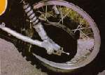
sometimes run in an oil bath. These chains lasted a long time. Sometimes as much as 40,000 miles or more. These days we gotta look trick so no more enclosed chain. This means you have to lube the chain a lot more often. I would say you need to lube a chain with a good chain lube a minimum of once every time you fill the gas tank. Once an hour would be better. Most of my customers lube their chains, Oh... about once a year. That might be optimistic I think.As a result most chains and sprockets are worn out in less than a thousand miles. Usually, when the chain is worn out so are the front and rear sprockets. This is because a chain does not "stretch" as it wears. It becomes elongated due to wear in the joints. This changes the pitch, which in turn wears out the sprockets. I have seen some big bikes, with big 630 chain, that seem to have worn out their chains without wearing out their sprockets too much. They were all well oiled all the time, they had big, low power engines AND I haven't seen very many of them. The biggest chain tip I can give is to oil that chain all the time. You can't do it too much.
In the old days, you would take the chain off, clean it off real good in solvent with a tooth brush and put it in a pan of grease. Put the pan on the stove and melt the grease so it will penetrate the bearing area, in the links of the chain. That's still a great way to really lube that chain, however, no one today will ever take the time to do it. 90 weight gear oil works good too, but it does tend to fly off. Fortunately, we have lots of different chain sprays on the market that work great. They go on as a liquid and penetrate the chain rollers, then dry, leaving the grease behind. The drill is to spray it on good and heavy, while spinning the wheel. Try to spray the edges of the chain. Now let it set for 10-15 minutes and you are good to go.
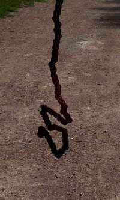
Now, I know what you are going to say. "I've got an O-Ring Chain. The ad said I don't have to lube it." Well, How do you define "Lube"? The picture to the left is of an O-Ring chain I took off a customers bike. Believe it or not, this is not the worst I've seen. One customer brought in an O-Ringed chained bike(XR200R Honda) and I could barely push it into the shop. You can't tell me that's not soaking up some horse power. The moral of the tale is this. Lube your chain even if it's an O-Ring chain. Just to complicate things, make sure the lube is OK for O-Ring chains.
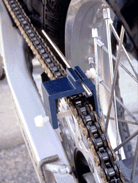
A chain must be adjusted from time to time. Both front and rear sprockets must be in line with one another, otherwise the chain will wear more on one side than the other. To help in this there are marks on each side of the swingarm. Simply match the marks. Yes, it is true the marks may be off, but I don't think they are as far off as some people say. If it bothers you that much, look down the chain and see if it going to one side or the other. Adjust it so it tracks straight. There are tools, like the one to the right, that you can use to help. When adjusted right the chain will have 1/2" or so, up and down play in the center between the sprockets. This is for bikes with normal shock travel. If you have a long shock travel bike (most dirt bikes) this play may be as much as 1 1/2". Check you shop manual for the correct amount.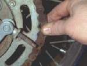 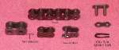
If you are removing rollers, you are already well past the "Worn Out" stage and into the "Total Garbage" stage. But, how much is too much? To get the answer, we need to consider several things. How much horse power do we have? If the bike has a lot of suds the danger of chain breakage goes way up. When a chain brakes, it normally shoots one end through the crankcase.
This can be quite expensive. If the chain jumps off the sprocket it can lock up the rear wheel. If you are going really fast, shoot, even if you are not going fast, this can be very exciting. Also painful. If you are willing to live with the breakage and lockup risk, you can run the chain and sprockets untill the teeth get bent and rounded so bad the chain jumps teeth on the sprocket. Now, this is not the best thing to do but it can be done. Is there some sort of steel chain guard in front of the sprocket? This could protect the crankcase in the event of a chain failure. Could you make one? Is your health insurance paid up? All in all, the best thing to do is replace the chain and sprockets and then keep them well oiled.
But, back to the question of how far can you push it. Bob Lane sent me this picture from England and said...
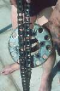
Always replace the chain and front and rear sprockets as a set. Never mix used parts with new parts. Yes, I know there may be rare exceptions to this rule (like big, well maintained, street bikes) but they are few and far between. It seems to be Ok to replace used with used because everything is ... well used.
To replace the chain and sprockets, first remove front chain guard and the front sprocket keeper. Most front sprockets are held on by one of three ways. With a E-clip, a big nut and lock washer, or with a clip that is bolted to the sprocket. The E-clip is a down and dirty way that is used for quick sprocket removal. A big "E" clip is used to hold the front sprocket on. Just pop it off and pull off the sprocket. This actually works pretty good but is not as secure as the other ways and usually means some one has replaced the factory keepers because not too many factories use this method to retain the sprocket. 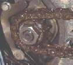
The Bolted Clip type fits in grooves on the counter shaft and then twists and bolts to the sprocket with two bolts. It is easiest to remove these bolts or nuts when the chain is still on so that it will hold the sprocket. If the sprocket still turns, you may have to get someone to hold the rear brake on while you unscrew things.
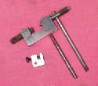

After the chain is off, remove the rear wheel. The rear sprocket is usually bolted to the rear hub. Sometimes it is bolted to a sprocket carrier, which slides into rubber cushions in the hub. Don't lose the nuts or bolts or lock washers. Often, they are of a special length or design. Now is a good time to look at any chain guides on the swing arm or chain slack adjuster rollers for wear and replace them if necessary.

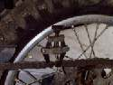
That's about it. Lube it up and you are done.
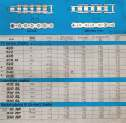 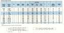
O-ring chains are a good idea, but they cost more. Some just have a regular O-ring and some have fancy styles of O-rings with special grooves for extra lube. Remember... YOU HAVE TO LUBE THEM!
You can get the rear sprockets in either aluminum or steel. Both wear well if lubed often. Steel is cheaper but weights more and comes in fewer sizes. Aluminum is light weight and comes in a lot of sizes, but costs a lot more than steel. Front sprockets come only in steel... well, there might be a few aluminum ones, but I can't think of any.
When you get new sprockets, you might want to consider changing gear ratios. This can really help the bike be more enjoyable to ride. For example, if you want to lower your engine RPM at highway cruising speeds you can either get a bigger (more teeth) front sprocket or a smaller (fewer teeth) rear sprocket. If you need more power up through the gears on a dirt bike, you can get a bigger rear sprocket or a smaller front sprocket. Generally speaking, one tooth change on the front sprocket equals about a 3 1/2 tooth change on the rear sprocket. It's best to keep the front sprocket as big as possible to lessen chain velocity as the chain rounds the sprocket, however it is cheaper to change the front sprocket as opposed to changing the rear. Bottom line... if your bike has trouble climbing that hill, (not enough power) go one tooth smaller on the front (counter shaft) sprocket. If it revs too high in top gear... just won't go fast (MPH) enough... go up one tooth on the front sprocket.
You can download a nice Free little program to figure out Motorcycle gear ratios from the IronJungle.
Download GearCalc v3.012 for Windows (244K zip file)
Here
For an online gear ratio calculator try Here

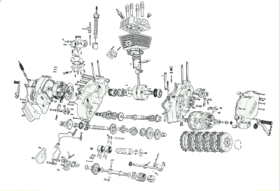 |
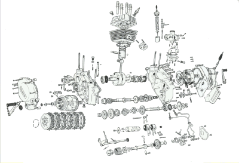 |
Copyright © 1999-2004 dansmc.com. All rights reserved.